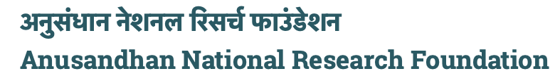

LHFIC-Earth
The rapid growth of remote sensing (RS) image archives due to advancements in satellite technology has created significant storage and processing challenges. Traditional compression methods such as DPCM, JPEG, and JPEG 2000 rely on transformation-based techniques and manual feature extraction, which become inefficient for large-scale datasets. Recent deep learning approaches, particularly convolutional neural networks (CNNs), enable more efficient compression and automatic feature learning. This work proposes the LHFIC-Earth framework, which adaptively allocates bit rates to pixels based on areas of interest to achieve higher compression ratios. The study also explores feature extraction from compressed data for scene classification and analyzes the trade-off between computational complexity and performance. The proposed approach supports onboard processing in nanosatellite missions, enabling efficient data transmission and storage while preserving important image information.

